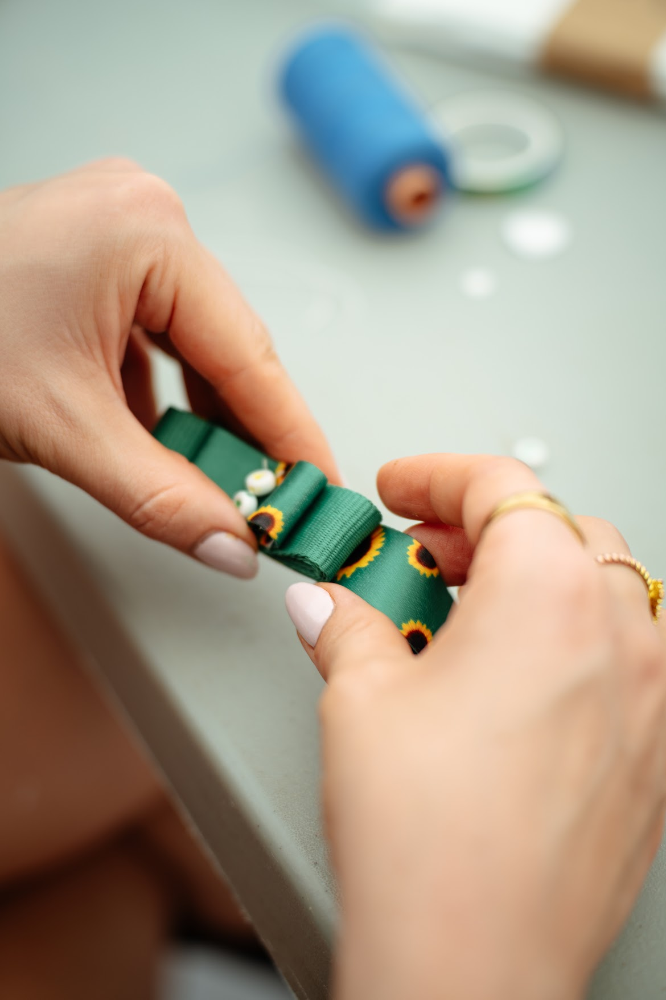
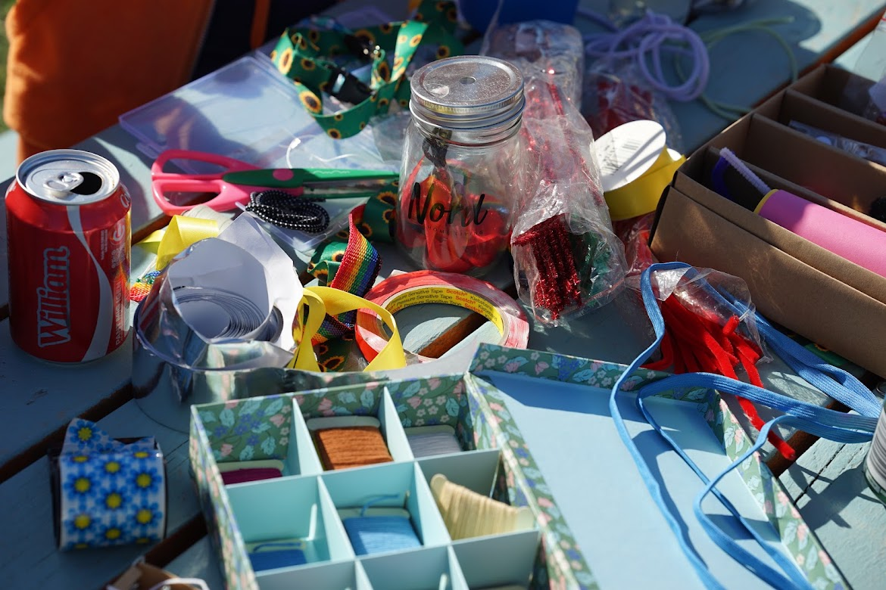

At Roskilde Festival, participants were invited to engage creatively with the Sunflower Lanyard through a hands-on making workshop. Using the lanyard as both material and starting point, the workshop created a space for conversation, reflection and personal expression.

Rather than presenting participants with a fixed message, the workshop used making as a way to open conversations. Participants could work directly with the materials, personalise their lanyards and explore what visibility and recognition can mean in a festival environment.
The informal workshop format made it possible for people to participate at their own pace. The act of making became a social interaction in itself — creating opportunities for conversations to emerge naturally around the table.
